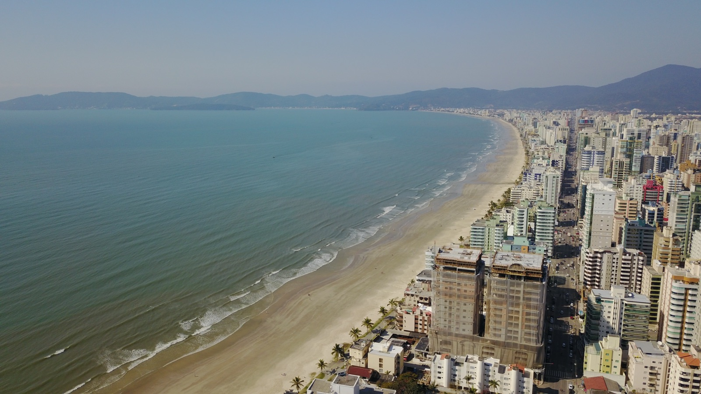

InfraestruturaPublicada em Atualizada em 5 de agosto de 2026, 16h50Redação Santa Informa

Entenda o assunto
A Meia Praia é a orla principal de Itapema e concentra a maior parte da ocupação urbana da cidade. Ao longo dos anos, o avanço do mar reduziu a faixa de areia em vários trechos, especialmente nos períodos de ressaca, o que pressiona calçadas, muros e o primeiro anel de edifícios.
O engordamento de praia é uma técnica de proteção costeira. Areia retirada de uma jazida submarina e bombeada para a faixa seca, ampliando a distância entre o mar e a área construída. O objetivo declarado combina duas frentes: proteger a orla contra eventos climáticos e ampliar o espaço de uso público durante a alta temporada.
A obra também conversa com a estratégia econômica do município. Itapema tem no turismo e na construção civil seus dois principais motores, e a qualidade da orla influencia diretamente os dois.
O que ainda esta em aberto. Licença ambiental de instalacao autoriza o início, mas não encerra o processo. Restam a licitação, a contratação da empresa executora e o cumprimento do prazo. Enquanto isso não estiver assinado e em campo, o cronograma segue sendo previsão.
Os números que importam
- R$ 60 milhões de investimento total, sendo R$ 30 milhões da Prefeitura e R$ 30 milhões do Governo do Estado
- 4,75 quilômetros de orla contemplados
- 20 a 60 metros de ganho na largura da faixa de areia, conforme o trecho
- 19 quilômetros da costa e a distância da jazida de onde sai a areia
- 4 meses de prazo estimado de execução, com início previsto para agosto de 2026
Fontes: Governo de Santa Catarina, Instituto do Meio Ambiente de Santa Catarina, Prefeitura de Itapema, ND Mais e Diarinho.
Espaço patrocinado
Meio de matéria · leitor engajado até o fim do texto
Formato disponível para anunciante da região